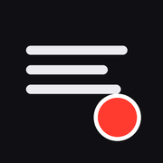

O botão verde salva um take por vez: toque, escolha “Salvar vídeo” no menu do iPhone e repita até acabar. Os takes ficam guardados aqui até você apagar, mesmo se fechar o app. Não apague o ícone do app: isso apaga os takes junto.
Gire o iPhone para a horizontal
O vídeo é gravado deitado (16:9).

Instale o Prompter no iPhone
Vira um ícone na tela de início e abre em tela cheia, sem o Safari.
Toque em Compartilhar na barra do Safari (embaixo ou em cima). Se não aparecer, toque em ••• primeiro.
Role a lista e toque em Adicionar à Tela de Início
Deixe Abrir como App ligado, se aparecer, e toque em Adicionar.
Feche o Safari e abra o Prompter pelo ícone. Permita a câmera e o microfone.